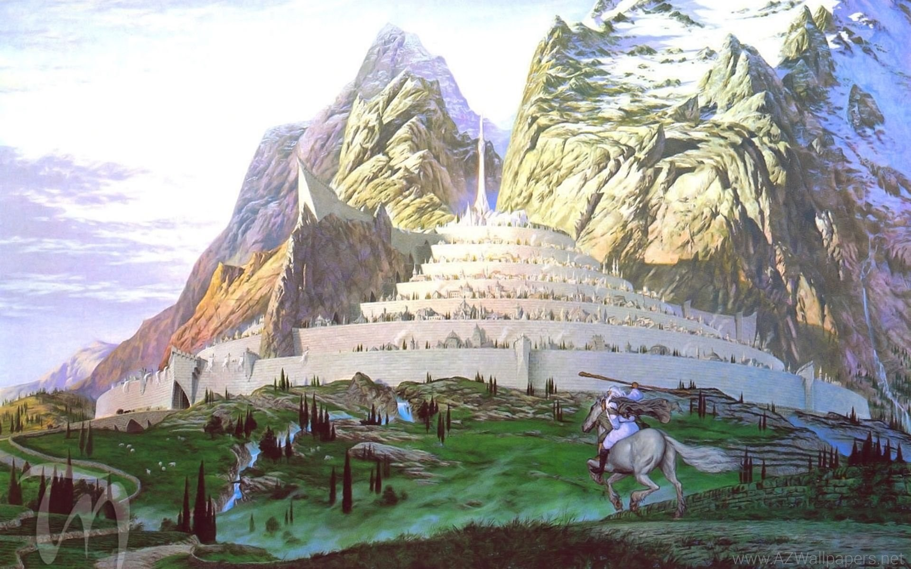
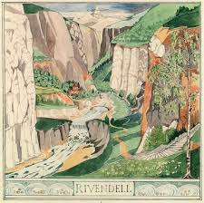
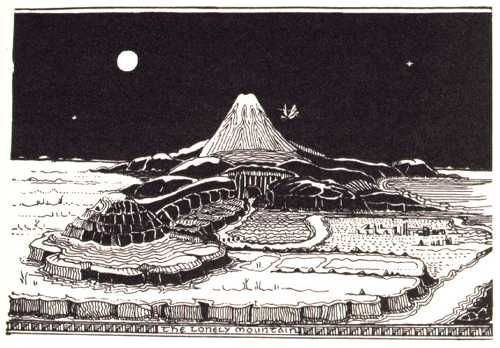

ELos Reinos de la Tierra Media en la Tercera Edad incluyen las grandes naciones de los hombres (Gondor, Rohan, Valle), los reinos de los Elfos (Lindon, Rivendel, Lothlórien, Bosque Negro) y los dominios de los Enanos (Erebor, Ered Luin).
Tierra Media o Endor (denominada Middle-Earth en inglés) es el continente ficticio donde tienen lugar la mayoría de los acontecimientos de las obras de J.R.R. Tolkien.
La Historia de la Tierra Media se divide en tres grandes períodos, que son las siguientes: las Edades de las Lámparas, las Edades de los Árboles y las Edades del Sol. De estos tres períodos, solo las Edades del Sol se encuentran enumeradas, y se componen de la Primera, Segunda, Tercera y Cuarta Edad del Sol.



Gondor: El reino del sur, hogar de los Dúnedain y la ciudad blanca de Minas Tirith.
Rohan: Reino de los señores de los caballos, aliados de Gondor, con capital en Edoras.
Arnor: Reino del norte fundado por Elendil, posteriormente dividido en Arthedain, Cardolan y Rhudaur.
Valle: Reino humano cerca de Erebor, reconstruido tras la caída de Smaug.
Lindon: El último reino de los Noldor, gobernado por Gil-galad al oeste.
Rivendel: El refugio de Elrond.
Lothlórien: El reino de Galadriel y Celeborn.
Bosque Negro: Reino de los elfos silvanos bajo el mando de Thranduil.
Erebor: La Montaña Solitaria, principal reino bajo la Montaña.
Khazad-dûm (Moria): La antigua y más grande morada enana.
Ered Luin: Asentamientos en las Montañas Azules.
Colinas de Hierro: Dominio enano al este de Erebor.